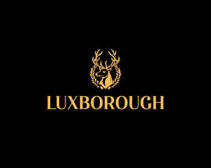

Trade Mark Journal No.2025/012 21 March 2025
UK00004169657 6 March 2025 (3,5)

- Class 3
- Skincare cosmetics; Anti-aging skincare preparations; Anti-aging moisturizers used as cosmetics; Skincare preparations; Moisturisers [cosmetics]; Skin moisturizers used as cosmetics; Anti-aging moisturizers; Anti-ageing moisturiser; Suncare lotions [for cosmetic use]; Cosmetic moisturisers; Anti-ageing creams [for cosmetic use]; Cosmetic products in the form of aerosols for skincare; Moisturising skin lotions [cosmetic]; Anti-aging creams [for cosmetic use]; Beauty serums; Acne cleansers, cosmetic; Facial moisturisers [cosmetic]; Non-medicated skincare preparations; Skin cleansers [cosmetic]; Moisturising skin creams [cosmetic]; Suncare lotions; Beauty serums with anti-ageing properties; Facial creams [cosmetics]; Anti-aging creams; Anti-ageing creams; Skin moisturisers; Anti-ageing serums for cosmetic purposes; After-sun oils [cosmetics]; Skin care lotions [cosmetic]; Skin care cosmetics; Beauty lotions; Skin moisturizer; Skin moisturiser; Skin moisturizers; Skin balms [cosmetic]; Beauty care cosmetics; After-sun lotions [for cosmetic use]; Moisturisers; Skin care creams [cosmetic]; Cosmetic creams for skin care; Skin recovery creams [cosmetics]; Skin creams [for cosmetic use]; Sunscreen creams [for cosmetic use]; Cosmetics; Cosmetic creams for the skin; Skin creams [cosmetic]; Facial cleansers [cosmetic]; Anti-wrinkle creams [for cosmetic use]; Cosmetic nourishing creams; Skin masks [cosmetics]; Moisturiser; Skin cleansers; Self-tanning preparations [cosmetics]; Moisturizers; Cleansing creams [cosmetic]; Skin moisturizer masks; Anti-ageing serum; Hairstyling serums; Cosmetic facial lotions; Facial lotions [cosmetic]; Facial moisturizers; Exfoliants for the care of the skin; Body and facial creams [cosmetics]; Exfoliants for the cleansing of the skin; Cosmetic creams and lotions; Non-medicated skin serums; Skin care oils [cosmetic]; Moisturising body lotion [cosmetic]; Beauty creams; Hair care lotions [for cosmetic use]; Beauty balm creams; Skin fresheners [cosmetics]; Anti-aging serum for cosmetic use; Skin lotions; Lotions for the skin; Sunscreens [for cosmetic use]; After-sun milks [cosmetics]; Skin cleansing lotion; Skin toners [cosmetic]; Cosmetic massage creams; Body creams [cosmetics]; Sunscreen [for cosmetic use]; Hair care creams [for cosmetic use]; Skin whitening creams; Creams (Skin whitening -); Tanning oils [cosmetics]; Cosmetic hair lotions; Facial creams [cosmetic]; Facial creams [for cosmetic use]; Sun care lotions [for cosmetic use]; Skin make-up; Exfoliating creams; Suntan lotion [cosmetics]; Skin cleansers [non-medicated]; After-sun milk [cosmetics]; Hair moisturisers; Skin whitening preparations [cosmetic]; Moisturizing creams; Cosmetic products for the shower; Creams for tanning the skin; Aromatherapy creams; Skin cream [for cosmetic use]; Cosmetics for use in the treatment of wrinkled skin; Skin lotion; Cosmetics for use on the skin; Skin hydrators; Creams (Cosmetic -); Cosmetic creams; Anti-aging cream; Organic cosmetics; Skin hydrators for cosmetic purposes; Aromatherapy lotions; Night creams [cosmetics]; Cleansing lotions; Hair care serums; Facial gels [cosmetics]; After-sun lotions; Facial cleansers; Moisturising creams; Anti-wrinkle creams; Beauty creams for body care; Exfoliant creams; Cosmetic preparations for skin firming; Anti-wrinkle cream [for cosmetic use]; Self-tanning preparations [cosmetic]; Cosmetic products in the form of aerosols for skin care; Hair cosmetics; Cosmetics for suntanning; Hair moisturizers; Colour cosmetics for the skin; Skin creams; Creams for the skin; Moisturising gels [cosmetic]; Moisturizing preparations for the skin; Dermatological creams [other than medicated].
- Class 5
- Pharmaceutical preparations for animal skincare; Pharmaceutical skin lotions; Moisturising creams [pharmaceutical]; Acne cleansers [pharmaceutical preparations]; Serums; Dermatological pharmaceutical products; Medicinal creams for skin care; Pharmaceutical products and preparations for hydrating the skin during pregnancy; Skin care lotions [medicated]; Antibiotic dermatological products; Acne creams [pharmaceutical preparations]; Moisturising body lotion [pharmaceutical]; Nutraceuticals for use as a dietary supplement; Dietary supplement drinks; Vitamin supplement patches; Dietary supplements; Vitamin supplements; Nutritional supplements; Calcium tablets as a food supplement; Dietary supplement drink mixes; Probiotic supplements; Colostrum supplements; Dietary supplements consisting of vitamins; Flaxseed dietary supplements; Nutritional supplement meal replacement bars for boosting energy; Zinc supplement lozenges; Homeopathic supplements; Calcium supplements; Propolis dietary supplements; Dietary supplements for medical use; Prebiotic supplements; Herbal supplements; Chlorella dietary supplements; Anti-oxidant supplements; Powdered nutritional supplement drink mix; Dietary supplements in powder form; Nutritional supplements for veterinary use; Dietary and nutritional supplements; Lecithin dietary supplements; Zinc dietary supplements; Protein supplement shakes; Nutritional supplement energy bars; Ground flaxseed fiber for use as a dietary supplement; Mineral dietary supplements; Nutritional supplements consisting primarily of magnesium; Liquid dietary supplements; Dietary supplements consisting primarily of magnesium; Protein supplements; Protein dietary supplements; Food supplements; Enzyme dietary supplements; Nutritional supplements consisting primarily of calcium; Dietary supplements consisting primarily of calcium; Mineral nutritional supplements; Liquid nutritional supplements; Feed supplements for veterinary use; Dietary food supplements; Liquid vitamin supplements; Yeast dietary supplements; Alginate dietary supplements; Linseed dietary supplements; Vitamin and mineral supplements; Acai powder dietary supplements; Casein dietary supplements; Nutritional supplements consisting primarily of zinc; Anti-oxidant food supplements; Pollen dietary supplements; Powdered nutritional supplement energy drink mix; Flaxseed oil dietary supplements; Food supplements for dietetic use; Glucose dietary supplements; Nutritional supplements consisting primarily of iron; Albumin dietary supplements; Wheat dietary supplements; Dietary supplements consisting primarily of iron; Dietary supplements for pets; Protein powder dietary supplements; Food supplements for veterinary use; Powdered fruit-flavored dietary supplement drink mix; Vitamin and mineral food supplements; Dietary supplements with a cosmetic effect; Dietary supplements for infants; Nutritional supplements for livestock feed; Nutritional supplements consisting of fungal extracts; Vitamin supplements for animals; Vitamin and mineral supplements for pets; Dietary food supplements used for modified fasting; Whey protein dietary supplements; Dietary supplements for animals; Liquid herbal supplements; Herbal dietary supplements for persons special dietary requirements; Dietary supplements for humans; Fodder supplements for veterinary purposes; Soy isoflavone dietary supplements; Dietary supplements and dietetic preparations; Health food supplements made principally of vitamins; Vitamin preparations in the nature of food supplements; Bee pollen for use as a dietary food supplement; Food supplements for medical purposes; Soy protein dietary supplements; Health-aid foods supplement containing red ginseng; Dietary supplements and dietetic preparations containing CBD oil; Food supplements in liquid form; Mineral dietary supplements for animals; Brewer's yeast dietary supplements; Mineral dietary supplements for humans; Nutritional supplements made of starch adapted for medical use; Linseed oil dietary supplements; Activated charcoal dietary supplements; Dietary supplemental drinks; Food supplements for non-medical purposes; Food supplements for sportsmen; Dietary supplements promoting fitness and endurance; Folic acid dietary supplements; Dietary supplements for pets in the nature of a powdered drink mix; Health-aid foods supplements containing ginseng; Mineral supplements for feeding livestock; Dietary supplements for controlling cholesterol; Medicated food supplements; Dietary supplements for humans not for medical purposes; Health food supplements made principally of minerals; Health food supplements for persons with special dietary requirements; Ganoderma lucidum spore powder dietary supplements; Royal jelly dietary supplements; Protein supplements for animals; Preparations for supplementing the body with essential vitamins and microelements; Dietary pet supplements in the form of pet treats; Natural dietary supplements for treating claustrophobia; Delivery agents in the form of coatings for tablets that facilitate the delivery of nutritional supplements; Fitness and endurance supplements; Pine pollen dietary supplements; Diet capsules; Multivitamins; Anti-oxidants for dietary use; Food supplements consisting of trace elements; Wheat germ dietary supplements; Food supplements consisting of amino acids; Nutritional drink mix for use as a meal replacement; Vitamin supplements for use in renal dialysis; Delivery agents in the form of dissolvable films that facilitate the delivery of nutritional supplements; Flaxseed meal for pharmaceutical purposes; Medicated supplements for animal feedstuffs; Strengthening supplements containing parapharmaceutical preparations for prophylactic purposes and for convalescents; Supplementary fodder mixes; Multi-vitamin preparations; Antibiotic food supplements for animals.
NOVA SKINCARE & WELLNESS BRANDS HOLDING. LTD